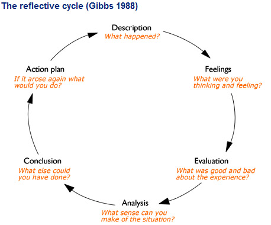

Richard Edbury
This essay aims to examines my teaching practice in a reflective fashion and express my understanding of underpinning theories of learning. As Loughran (2002, pp 9) tells us that, “It is through the development of knowledge and understanding of the practice setting and the ability to recognize and respond to such knowledge that the reflective practitioner becomes truly responsive to the needs, issues, and concerns that are so important in shaping practice”. The models analysed and used will be Kolb and Fry’s (1975, cited in McLean, 2008) experiential learning cycle and Gibbs’s (1988) reflective cycle (images of each in appendix 1).
Background
I had a year and 4 months teaching during which I had completed Petals and the first yer of the Certificate of Education prior to the year I am reflecting on. For the new year several professional challenges presented themselves, firstly my paid hours included 20 minutes preparation time per hour of teaching, this time was to allow for all other responsibilities I had as part of my job, such as writing schemes of work, dealing with enquiries, disciplining students and completing registers. I was to be running the Games development year one and two qualifications, because of financial constraints they were to be taught concurrently for 6 hours a week, syllabus issues as well as knowledge required to do later tasks on the course, prevented both being taught the same subject for the majority of this time. The class size for this group varied from between 21 and 23. Later in the year, 2 teachers left the college, both of these were teaching in courses I worked on and I was asked to run these courses also, these were a GCSE Creative Media group and a Journalism BTEC. Both of these courses had 2 year groups, Journalisms like games was a merged class. A final challenge for the year was extremely faulty IT provision.
Going into the year my teaching style was very humanistic, as Allander and Allander (2008, pp 1) say “Meeting the needs of every child is the basic tenet of humanistic education”, this is clearly a hard goal. I felt I was over the initial anxiety of worrying I could get the majority to learn, the further goal of leaving no student out, was a distinct issue and my primary aim to work on.
Reflective Practice
“Being a reflective practitioner at any stage of teaching development involves a constant critical look at teaching and learning and the work of you the teacher” says Dymoke (2008, pp 8). I would expand this definition to include all areas of the job and add the aim to improve as a result, to explain what reflective practice means to me.
To me teaching is an art that I can never perfect; I have never taught a session in which I did not noticed a clear mistake I made or improvement that I could add. If I ever did it would almost certainly be due to missing the flaw or flaws in the lesson.
In my view, theories of reflective practice aim to help the analysis of an event and where needed suggest improvements.
Both models I analyse are cyclical in nature, by iterating an event, correcting mistakes each time eventually an ideal method will be centred upon. An Iterative approach is complicated by the fact that situations in teaching are rarely if ever identical, to stay the same the solutions must be robust.
This could be the lesson start, this is a frequently repeated procedure and therefore ideal for refining. If I were to assume there is a perfect lesson start, a hypothetical example being the phrases “Welcome to the class. Thank you for being here on time, are you all comfortable? Today we will be covering ...”. Even were this the best possible lesson start, occasionally a circumstance will come up where the above is not optimal, it could be due to the boredom of repetition, either for students, or for myself, if I was to find I could not say it enthusiastically. It could be that I had a key piece of news to impart before covering objectives or because the lesson would be better if the subject matter was initially hidden. Whatever the reason teaching has few if any one solution fits all scenarios.
The Kolb and Fry model (1975, cited in McLean, 2008) has 4 stages; concrete experience, reflective observation, abstract conceptualisation and active experimentation, leading back to the first stage. The models strengths in my view are that is simple, something happens, you consider it, make sense of the situation and from there create a plan, that you will try when a similar situation occurs again repeating until you have optimised the procedure. I think in a mathematical fashion and can analyse most situation devoid of emotion, especially afterward however frequently, the similar Gibbs cycle which considers the reflective practitioners feelings is better to use.
Gibbs (1998) reflective cycle is written more simply than the older theory of Kolb and Fry. It moves from description, to feelings, to evaluation, to analysis and from there on to a conclusion and action plan before repeating the cycle. The cycle adds the feeling stage as mentioned above but also splits up the middle stages, I feel this is largely semantic.
While these steps are delineated, a complex problem is sometimes approached by considering solutions to one aspect, before necessarily considering the full implications of another part of the problem; I regard both cycles to be guides not to be rigidly followed but to aid the process.
The final consideration here is when does a reflective practitioner use these models, this can be partially done whilst teaching itself, however in order to remain impartial and understand how events played out so that conclusions can be reached it is important to engage in reflective practice at other times. I try to reflect ever day as I walk home from work making notes when I arrive home, I sometimes reflect late or in the middle of the night when I pressing issue comes up and finally I try to make a significant proportion of time available every term to reflect on a larger scale.
Curriculum Design:
At year start, I’d had both the advantages and disadvantages that I’ve never taught from someone else’s scheme of work, this means right from the start of my teaching practice I’ve been designing content but also have the disadvantage that I have never had the benefit of refining an existing plan. With the benefit of a full year taught I could restart a Gibbs cycle in many areas of planning and already had the benefit of learner satisfaction surveys that I’d run. I’d initially approached teaching from a customer satisfaction point of view, as in considering what the learners want? In addition to this I would fill in what the college required which often overlaps.
This year the course finished late, several students handing in work past the deadline. There were several forced changes, which were accommodated for to a varying degree of success. Students largely understood what was needed and by when. Assignments were heavily integrated between units to maximum overlap and thus reduce their workload.
I felt the course was well planned on a large scale but some individual sessions were poorly planned due to time pressure. I was disappointed by the number of forced changes I had to make.
Individual sessions focus changed multiple times, often because computers weren’t working so the planned activity couldn’t be executed or to capitalise on the times when they were. As (Dymoke 2008 pp 112) says “The key to good teaching lies in careful preparation and planning of lesson. It is often the case that poor teaching, classroom management and behaviour stem from a lack of explicit planning.” My experience backs this up I would say that almost all my failed lessons last year occurred when I was forced to change plan or when my planning was insufficient. The time requirements were estimated well, the units taught meshed together very well. I had a project involving self motivated study that went poorly, students struggled with the scale and many found it hard to work early on.
The early part of the year went extremely well with everything going very close to schedule with the exception that there were numerous computer issues. This didn’t affect delivery of new material but hampered work being completed in class and therefore handed in. This led to the course being a little bit behind schedule. Later in the year two more issues occurred, the term end was confirmed as being 5 weeks earlier than previously expected for part time teachers as part of budget saving measures; secondly an additional small qualification was required to be taught to replace funding lost as the government changed the rules governing tutorial teaching funding. The course schedule allowed 4 weeks for improving work, teaching was pared down to just essential material; however with the computer issues persisting many students could not cope with the changed requirements. I personally think that I handled this situation well and the institution was at fault.
To improve on these situations, early in the year when the computers were not working I could have stopped using them and switched assignments round rather than relying on them being fixed and pursuing this heavily. I think this isn’t really possible for the course I run, however I am sure there are many ways to make my lessons somewhat less reliant on computers. I could have planned more lessons during the summer this would have freed up a lot of time later in the year. This was not done as I had no contracted preparation time. I don’t think I should have allowed more than 4 weeks for improving work and leeway at the end of the year.
Next year I plan to use a fairly similar system to this year with the following changes: My student managed project will be much shorter and I will use the saved time to allow students to try it again, as well as to cover the skill set needed in more detail before hand. I plan to try to reduce computer usage where possible, especially at induction where account set up is least likely to work and also to teach things with a forced technology base earlier to allow for correction if needed. Finally I plan to have more individual lessons planned in advance to give myself time leeway later on.
Teaching
At the start of the year my general teaching was mediocre, I could control the class, deliver information in a range of ways, even make sessions fun, but all sessions I taught contained numerous flaws that I could spot, my body language was poor and I found it difficult to handle unusual circumstances.
“The most frequently used indicators of teacher quality are imprecise.” Bracey (2003) for this reason I will use a range of indicators as shown:
Measurable student success: success rate/distance travelled etc.
Student feedback
Work feedback
Teaching observation results
My own interpretation
The statistics for this year for games development leave a good picture 21 of 22 students completed a qualification, the 1 student that left received a job offer for a high paid job and took that offer. Grades received by both first and second year students show excellent distance travelled, students moving up on average more than a grade from their average GCSE results (E.g. a student who got 8c’s at GCSE averaged Merit grade on the BTEC). This is in keeping with previous year’s 100% success rate.
On other course the statistics are markedly worse, 7/9 TV and film students completed all work I assigned them this year although those who completed, completed well. Students who failed here missed classes repeatedly. The creative media a course I ran went very poorly, 1/3 passed in the second year and the first year largely had to complete work over the summer to catch up. The Journalism course I taught, I felt was running reasonably well, given the very poor circumstances of a course leader lacking subject knowledge and having had a very poor teacher phone in sick for three weeks before leaving early in the course. I eventually asked to be relieved of the responsibility of running the course due to an excessive work load and this was granted. I continued to support one pregnant student via distance learning who manage to achieve a merit grade.
Student feedback was somewhat mixed throughout the year, I received many compliments, glowing feedback form praise and a letter saying that my work was appreciated. I had 2 games students who gave me a lot of criticism and received occasional comments from students (I prompt this frequently in 1 to 1’s) often referring to myself as not strict enough.
Corporate feedback was very good in terms of an outstanding performance review in December. Generally all comments were positive include a comment from the principle, the exception being the action of removing my teaching from Journalism (I’d asked to lose the course leader side not the teaching side). My observation results were mixed, I was observed 10 times during the year, with 1 outstanding result 5 good results and 4 satisfactory grades.
Looking back I improved a lot by making thousands of little changes. I feel extremely confident walking into a classroom, I know my core subject well, I lead well by example and I make time for students. I still have poor posture and body language despite attempts to rectify this. I teach using a largely humanistic style and feel I am getting better at this but when I do fail to connect with a student exhibiting troublesome behaviour I still sometimes feel at a loss about what to do. When I do feel compelled to be strict I am not good at it, particularly in enforcing boundaries and carrying out punishment. I sometimes teach at too high a level, particularly in games development when the class has very mixed abilities.
During the year I tweaked and changed many little things, strategies to encourage students to hand in work on time were investigated through action research, but far more changes we’re either instinctual in the lessons or consciously made as a result of reflection. Changes made successfully include smiling more, getting students to help each other more, making the first 15 minutes of a lesson fun but less essential (to avoid the need to repeat to latecomers whilst still incentivising turning up on time), being prepared to teach slightly off topic occasionally if the subject is holding student attention well and is beneficial. I have a lot of experiments I want to try over the next year.
(Allitt 2009) suggests a technique whereby teachers start assigning work on the first day of term, with regular short deadlines; this builds the expectation in the students of what is expected and also allows me to assess early on who has the likelihood of completing. I want to try using role play and peer review a bit more, both things I have been nervous about but I think my facilitating skills are at the point where I can judge how things are working and correct them confidently. I want to both stand and sit more straight and talk where appropriate to show confidence more, I’d like to be less threatening in others especially not looming over timid students.
Action Research, Subject Specialism and other Continuing Professional Development
Currently I have frequent training at college, I have since I started teaching always been taking a teaching qualification concurrently, I read a lot on a wide range of topics and continually tweak my methods. I also ran an action research project on motivation as part of the university course. I find learning new things very fun, I normally look forward to training and will happily learn about teaching or games development for enjoyment. There is a significant problem that the games industry is quite secretive and there is very little pre prepared teaching material. Ofsted (2011) tell us “The report identifies a lack of subject-specific training for teachers that is undermining efforts to develop pupils’ knowledge and skills. Too many teachers are failing to keep pace with technological developments or expand on their initial training sufficiently to enable them to teach the technically demanding aspects of the curriculum. This often results in an out-dated curriculum.” This is definitely the case for me, while training is approved easily if I request it, subject specific training that fits with my work hours is hugely expensive and in many parts of my subject just doesn’t exist outside of a minority of full degree programmes.
My strengths in this sphere include having worked in the industry I specialise in, genuine enjoyment of both my subject and teaching itself, being able to spot mistakes in my practice. I am also good at finding material to self teach and recognise that I have infinite amounts to learn. I have several problems too, I very much enjoy seeing an improvement as I progress, as the improvement diminishes I enjoy it less, this frequently leads me to seek something new to improve. I’m drawn to try things outside my comfort zone which can be good in teaching but means I often tamper too much with working formulae. I am very bad at doing things I have a low interest in, which means if I find an interesting book I read it very quickly but a book that has a few useful points but is uninteresting is a struggle for me. I also teach in a rapidly changing subject area, the games industry is extremely secretive, updating my professional development here is a real challenge.
I have found that almost anything I learn helps my teaching, even completely unrelated areas, such as business management or fiction books help, albeit usually less than books strictly on teaching. I have found autobiographies to be extremely helpful as they generally outline the reasons why that particular successful person is successful. An example of this was an observed tutorial I taught; I used the book Bounce, this has the central theme that hard work, is more important than natural talent with a range of interesting examples, this was possibly my best received lesson of the year.
I use several main methods, to do my CPD, the first I covered previously is leisure reading done in my spare time, including current affairs. I do my research into current developments in games the same way, playing recent games, following the websites with interesting information and talking to friends who are currently professionals. This frequently covers books on teaching which I enjoy. I also do what I would describe as deliberate work CPD, attending courses as they become available and reading books on the more dull subjects. I experiment in class frequently; I do this very informally normally having a small list of minor changes I want to make and about once a week aiming to try a lesson that does something outside my comfort zone. My action research project this year had disappointing results, the information was often invalid, the process however was very enlightening and I feel firstly that many aspects can be integrated into my usual experimentation process.
I could have done two things I think would have helped me over the last year. The first is that I discovered recently that a lot of course material is available for my BTEC if it is requested from Edexcel, obviously had I known this I would have requested it as excellent CPD material, the second is targeted more specifically weakness I have rather than reading what interests me.
I expect many move to cheaper education in coming years. One relevant example is that I expect extremely high quality segments of lessons to be produced and widely shared; teachers will be able to use these segments as they choose and students may be able to study entirely from these. This achieves standardisation, is actually cheap preparation, paying a team, even at a huge salary to produce this material is a lot less than paying each teacher preparation time. I hope to focus on is designing course material for distance learning or to be slotted into a normal class. Games design is a field where students are very happy learning from a computer and thus it would be natural to pioneer research in this area. I see good distance learning material being a big area in this field and I’d like to further investigate methods of learning with the designer of the material not present. I also hope to focus on developing games for education purposes; currently this field is in its infancy. I also feel education has a lot to learn from the reward structures offered by modern computer games aimed to keep users playing and would like to try and bridge these two fields. All three of these above areas should interconnect. In terms of CPD I plan to spend one further year experimenting with the myriad of minor improvements, after this I expect these changes to start to drop away a little or at least to be for a smaller benefit, I feel I could run action research relating to the above areas for many years. This will aid my development even if teaching doesn’t progress in the way I anticipate.
Conclusion
In the previous year, I took on too much and was not ready for the added responsibility. This affected my personal life, my progress in teacher training and the quality of my teaching itself. I made a conscious decision not to repeat this, for the upcoming year I will teach only games development and work just 3 days a week. I want to teach a year of extremely high quality teaching and achieve real job satisfaction; in addition to this I was to have time to pursue personal development projects, such as those mentioned in the previous section. While the method was bad, being forced to teach in difficult circumstances has made me much better at reacting to the unexpected and teaching in general. My confidence level is much higher my prepared material massively better, last year I found induction to be a stressful chaos this year it was a calm smooth process and the difference is immediately apparent to me. I now have the luxury of having enough lessons prepared lessons to last a year, while I will update change and introduce new things, I have much to learn still but in most areas, my fundamentals are sound. I care about my students and know my subject; I am learning quickly and plan to continue this for as long as possible. Last year my key goal was to improve my humanistic teaching, often I fell short of this and plan to focus on this over the next year. My big aim is to teach only good on the Ofsted scale or better lessons for a whole year, this is unlikely but in setting high goals for myself as I plan to for my students, I hope to push myself to higher performance.
References
Allander, D, Allander, J., (2008) The Humanistic Teacher: First the Child, Then the Curriculum. Paradigm.
Allitt, P., (2009) Art of Teaching: Best Practices from a Master Educator, the Teaching Company audio book
Anon, (2011) Press release: The design and technology curriculum needs modernising – Ofsted (Online) http://www.ofsted.gov.uk/news/design-and-technology-curriculum-needs-modernising-ofsted date accessed 23/09/2011
Bracey, G. Mason, G. Molnar, A. (2003) Recruiting, Preparing and Retaining High Quality Teachers: An Empirical Synthesis Arizona state university (Online) epsl.asu.edu/epru/documents/EPSL-0302-102-EPRU.doc date accessed 23/08/2011
Dymoke, S., Harrison, J., (2008) Reflective teaching and learning Sage, London
McLean, J., (2008) Reflecting on your teaching (online) http://learningandteaching.unsw.edu.au/content/LT/teaching_support/reflecting.cfm?ss=2 date accessed 07/11/2010.
Gibbs, G., (1988) Learning by Doing: A guide to teaching and learning methods. Further Education Unit. Oxford Polytechnic: Oxford.
Loughran, J. J., (2002) Effective reflective practice: in search of meaning in learning about teaching. Journal of Teacher Education: 53
Appendix 1
Kolb and Fry, 1975 cited in McLean, 2008)

